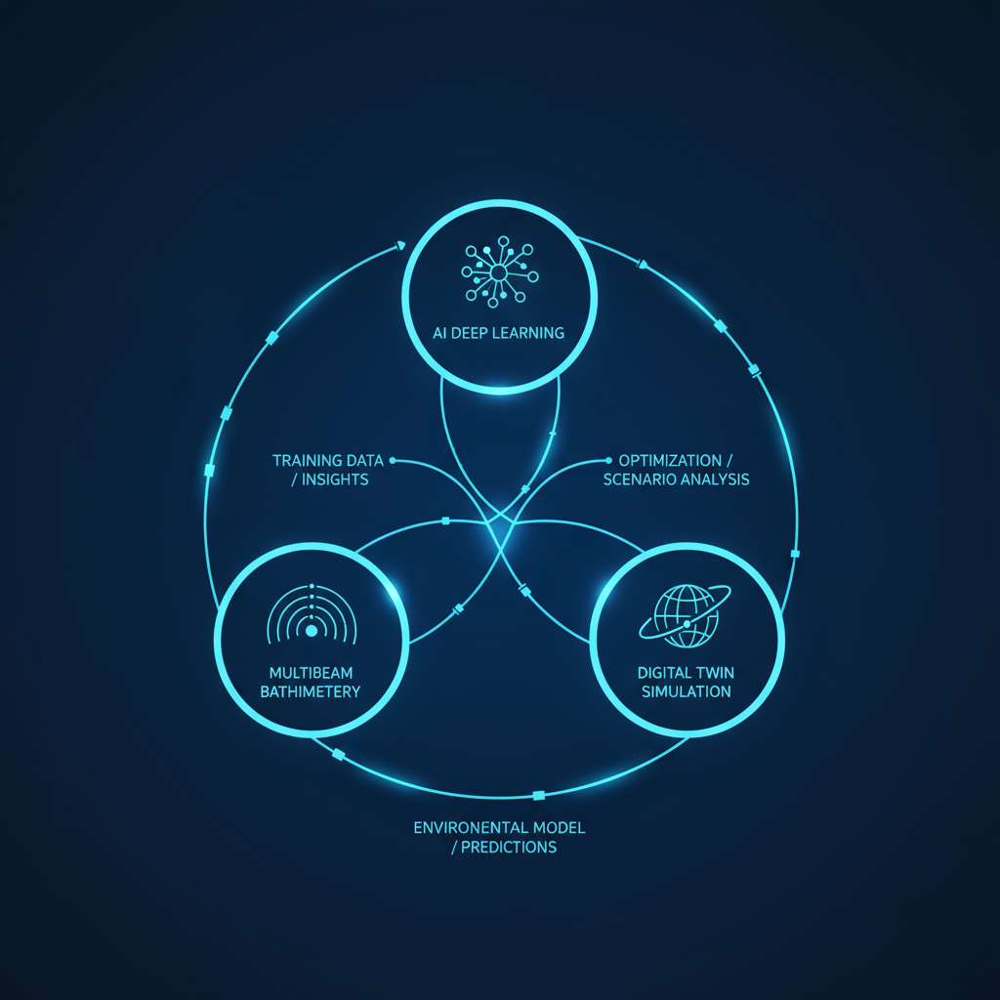
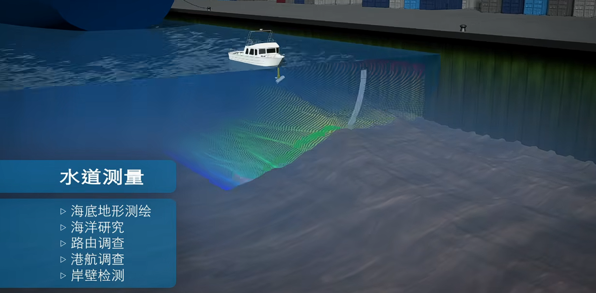
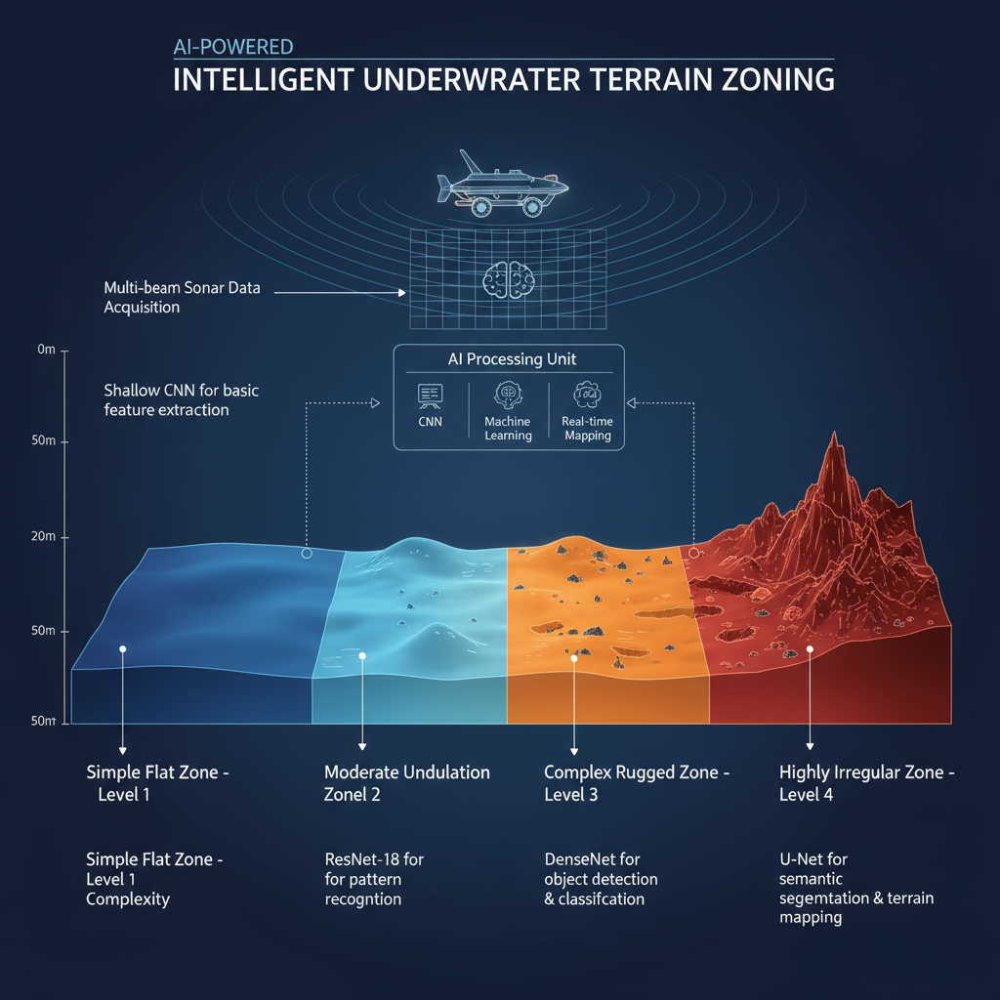
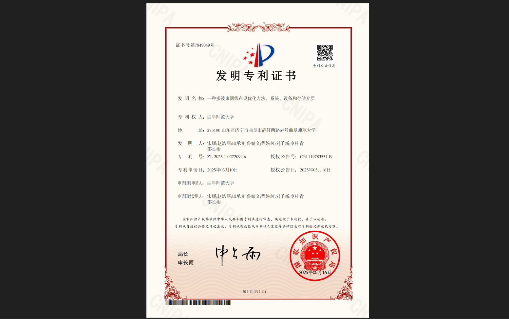
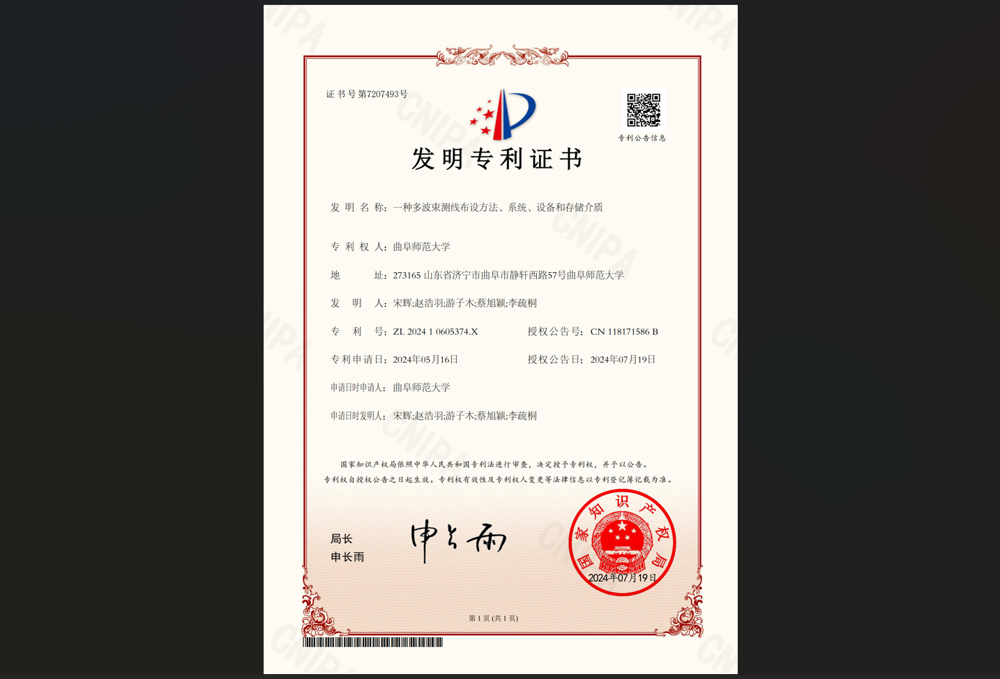

基于"AI深度学习+多波束测深+数字孪生仿真"三位一体技术架构， 构建智能化、高精度、高效率的海洋测绘解决方案
三位一体技术架构，协同实现智能化测绘

深度学习与强化学习的完美结合
构建经纬度、水深、覆盖次数矩阵、地形复杂度矩阵的五维模型， 为AI算法提供全面的输入特征
引入AI动态阈值优化引擎，实时调整K-means+DBSCAN二级聚类参数， 复杂区自动细分网格，平坦区保留较大网格
通过Elbow准则确定最优分区数量，用轮廓系数确保分区合理性， 复杂地形误分区率从10-15%降至3.5%以下
贪心算法完成核心区域初步布线 + 高效遍历技术 + 深度强化学习动态重规划
根据声呐反馈实时重规划测线，避免传统算法局部最优问题， 应对突发海底沟壑、断崖等复杂地形
经仿真验证，测线总长度减少32%， 为商用场景降低30%人力与时间成本
传统方法 vs AI优化方法


双专利保护，构建核心技术壁垒
已授权
保护"有效测宽建模-覆盖次数分区-布线"核心流程， 含AI动态适配衍生应用
构建五维模型，实现智能分区与差异化测线布设， 显著提升复杂地形测绘精度
已授权
保护"网格精度调控-高效遍历-误差优化"关键技术， 含AI高效计算延伸
将传统全区域网格遍历简化为仅遍历有效网格， 遍历效率提升40%
双授权专利覆盖技术全链条
核心算法软件著作权申请中
期刊论文撰写中，形成学术壁垒
核心技术获得权威认证

